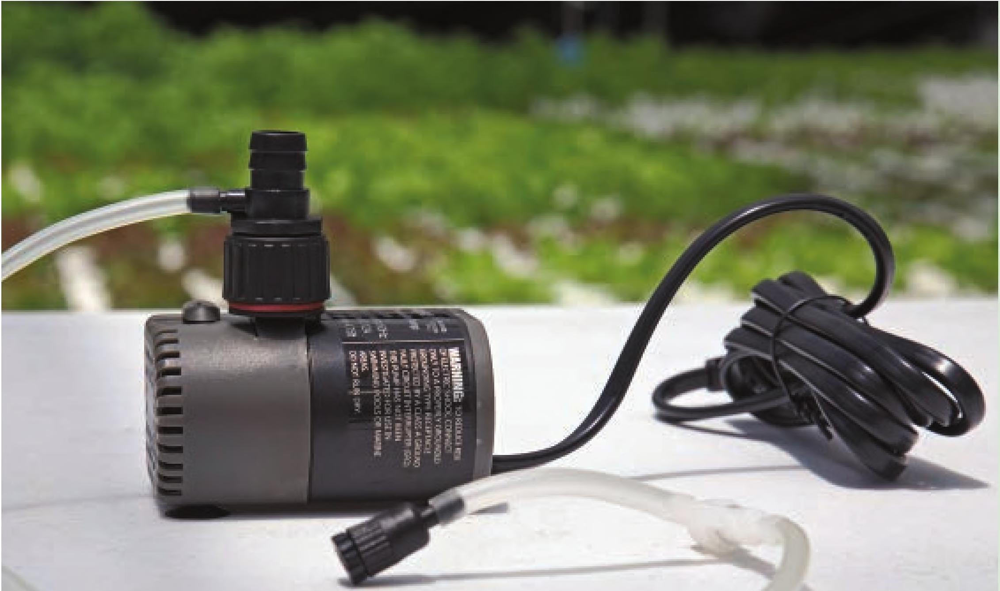

Venturi Pumps A venturi attachment is a simple way to aerate a hydroponic system without adding an air pump and air stones. A venturi can attach directly to a pump or be installed inline in a section of tubing. Venturis take advantage of a phenomenon called the Venturi effect, which occurs when a liquid or gas flowing through a pipe moves through a constricted section, resulting in increased velocity and decreased static pressure. The venturi pump attachments have an intake tube positioned in the area of lower pressure. The decreased pressure creates a suction, which is used to pull air into the pipe. A pump with a venturi attachment can be placed on a reservoir wall to both circulate and aerate the nutrient solution. Air pumps are rated by airflow measured in liters per minute (L/min). The target liters per minute for each hydroponic system depends on many factors, including reservoir size, water temperature, crop, and crop age. In my experience, 1 L/min per 5 gallons is generally sufficient for most applications. A 100' roll of 1/2" black vinyl tubing A sample of W clear vinyl tubing Air Stones Air pumps deliver air through air stones, which come in a variety of shapes and sizes. Air stone preferences vary greatly by grower. I personally prefer flexible air stones and round air stones with bottom suctions. There are other ways to aerate a nutrient solution besides air pumps with air stones or water pumps with venturi attachments. Cascades or waterfalls are often the sole method of aerating nutrient solutions in NFT systems. Other more advanced methods include ozone generation and liquid oxygen injections. Tubing Not all irrigation tubing is the same. Traditional irrigation tubing used in landscaping is often very stiff and difficult to use in most hydroponic applications. Black vinyl tubing is generally the standard choice for hydroponic irrigation because it is flexible, is strong, and easily connects to the standard fittings used in hydroponic gardens. The most common sizes for black vinyl tubing are Vi, 5/u, V2, 3A, and 1 inch. Clear tubing is not recommended for irrigation lines. There is always the potential for algae growth when the nutrient solution is exposed to light. Clear tubing can be a hot spot for algae and is difficult to clean once algae develops. Clear tubing is popular in aquariums because it is nearly invisible and is more aesthetically pleasing. If aesthetics are not a major concern, Vi-inch black tubing will work just as well as Vi-inch clear tubing. EQUIPMENT 21
